사회조사분석사-2급 (2012-03-04 기출문제)
1과목: 조사방법론 I
1. 다음중 내용분석에 관한 설명으로 틀린 것은?
- 분석대상에 영향을 미친다.
- 시간과 비용 측면에서의 경제성이 있다.
- 일정기간 동안 진행되는 과정에 대한 분석이 용이하다.
- 연구 진행중에 연구계획의 부분적인 수정이 가능하다.
(정답률: 64%)

2. 집합단위의 자료를 바탕으로 개인의 특성을 추리할 때 저지르기 쉬운 오류는 ?
- 생태학적 오류
- 제1종 오류
- 개인주의적 오류
- 제3종 오류
(정답률: 74%)
3. 면접조사의 원활한 자료수집을 위해 조사자가 응답자와 인간적인 친밀 관계를 형성하는 것은?
- 래포(rapport)
- 사회화(socialization)
- 조작화(operationalization)
- 개념화(conceptualization)
(정답률: 84%)
4. 질적 방법으로 수집된 자료에 관한 설명으로 틀린 것은?
- 정보의 심층적 의미를 파악할 수 있다.
- 유용한 정보의 유실을 줄일 수 있다.
- 현장중심의 사고를 할 수 있다.
- 자료의 표준화를 도모하기 쉽다.
(정답률: 78%)
5. 다음 중 과학적 연구에 관한 설명으로 틀린 것은?
- 과학적 연구는 일반적으로 개체에 대한 설명보다 일반법칙에 근거한 설명이어야 한다.
- 과학적 연구는 복잡하더라도 많은 정보를 제공하는 설명을 추구한다.
- 과학적 연구는 경험적으로 검증 가능하여야 한다.
- 과학적 연구는 일반적으로 단순한 상관관계에서 벗어나 이론을 바탕으로 인과관계를 설명하려 한다.
(정답률: 68%)
6. 다음중 실험의 특징과 가장 거리가 먼 것은?
- 독립변수를 의도적으로 조작할 수 있다.
- 피실험자를 각 집단에 무작위로 배정할 수 있다.
- 주로 현상에 대한 단순한 기술보다는 설명을 목적으로 한다.
- 탐색적인 접근을 할 때 잘 사용하는 방법이다.
(정답률: 50%)
7. 질문지를 작성할 때 고려하여야 할 사항과 가장 거리가 먼 것은?
- 관련되는 질문의 경우 한 문항으로 묶어서 문항 수를 줄인다.
- 특정한 대답을 암시하거나 유도해서는 안 된다.
- 모호한 질문을 피한다.
- 응답자의 수준에 맞는 언어를 사용한다.
(정답률: 84%)
8. 완벽한 실험설계를 위하여 충족되어야 하는 조건과 가장 거리가 먼것은?
- 실험변수의 조작 가능성
- 인과관계의 일반화
- 외생변수의 통제
- 실험대상의 무작위화
(정답률: 69%)
9. 다음 중 분석단위의 성격이 다른 것은?
- 남성은 여성보다 외부에서 활동하는 시간이 많아 교통사고의 피해자나 가해자가 될 확률이 더 높다.
- A지역의 투표자들은 B지역의 투표자들에 비하여 X정당후보자를 지지할 의사가 더 많다.
- A기업의 회장은 B기업의 회장에 비하여 성격이 훨씬 더 이기적이다.
- 선진국의 근로자들과 후진국의 근로자들의 생산성을 국가별로 비교한 결과 선진국의 생산성이 더 높았다.
(정답률: 53%)
10. 다음중 탐색적 조사(exploratory research)에 관한 설명으로 옳은 것은?
- 어떤 현상을 정확하게 기술하는 것을 주목적으로 하는 연구이다.
- 시간의 흐름에 따라 일반적인 대상집단의 변화를 관찰하는 조사이다.
- 동일한 표본을 대상으로 일정한 시간간격을 두고 반복적으로 측정하는 조사이다.
- 연구문제의 발견, 변수의 규명, 가설의 도출을 위해서 실시하는 조사로서 예비적 조사로 실시한다.
(정답률: 74%)
11. 다음 중 표준화면접의 사용이 가장 적합한 경우는?
- 새로운 사실을 발견하고자 할 때
- 정확하고 체계적인 자료를 얻고자 할 때
- 피면접자로 하여금 자유연상을 하게 할 때
- 보다 융통성 있는 면접분위기를 유도하고자 할 때
(정답률: 80%)
12. 다음 중 시각적 보조 자료를 활용할 수 없는 조사방법은?
- 우편조사
- 전화조사
- 면접조사
- 온라인조사
(정답률: 75%)
13. 다음중 가설이 갖추어야 할 요건이 아닌 것은?
- 가설은 이론적으로 검증할 수 있어야 한다.
- 가설은 계량적인 형태를 취하거나 계량화할 수 있어야 한다.
- 가설의 표현은 간단명료해야 한다.
- 가설은 동일분야의 다른 가설과 연관을 가져서는 안된다.
(정답률: 87%)
14. 대통령 후보자 간 TV 토론에 대한 국민들의 반응을 조사하는 방법으로 가장 적합한 것은?
- 전화여론조사
- 우편조사
- 면접조사
- 참여관찰
(정답률: 79%)
15. 다음중 집단조사에 대한 설명으로 틀린 것은?
- 비용과 시간을 절약하고 동일성을 확보할 수 있다.
- 주위의 응답자들과 의논할 수 있어 왜곡된 응답을 줄일 수 있다.
- 학교나 기업체, 군대 등의 조직체 구성원을 조사할 때 유용하다.
- 조사대상에 따라서는 집단을 대상으로 한 면접방식과 자기기입방식을 조합하여 실시하기도 한다.
(정답률: 82%)
16. 사후실험설계(ex-post facto research design)의 특징으로 틀린 것은?
- 사설의 실제적 가치 및 현실성을 높일 수 있다.
- 순수실험설계에 비하여 변수들간의 인과관계를 명확히 밝힐 수 있다.
- 분석 및 해석에 있어 편파적이거나 근시안적 관점에서 벗어날 수 있다.
- 조사의 과정 및 결과가 객관적이며 조사를 위해 투입되는 시간 및 비용을 줄일 수 있다.
(정답률: 49%)
17. 조사원 교육 및 관리에 대한 설명으로 틀린 것은?
- 조사원 교육은 연구자나 실사감독관이 한다.
- 교육은 별도의 자료나 매뉴얼을 작성하여 실시한다.
- 조사원이 조사 목적, 설문 내용 및 조사 진행 과정 등을 숙지하도록 한다.
- 조사과정에서 발생하는 문제는 조사원 스스로가 해결하도록 유도한다.
(정답률: 86%)
18. 이론으로부터 가설을 설정하고 가설의 내용을 경험적 자료에 기반하여 가설의 채택여부를 결정하는 방법은?
- 연역적 방법
- 귀납적 방법
- 조작적 방법
- 탐색적 방법
(정답률: 74%)
19. 질적 현장연구 중 초점집단연구가 주는 이점으로 틀린 것은?
- 빠른 결과를 보여준다.
- 높은 타당도를 가진다.
- 개인면접에 비해 연구대상을 통제하기 수월하다.
- 사회환경에서 일어나는 실제의 생활을 포착하는 사회지향적 연구방법 이다.
(정답률: 59%)
20. 다음 조사에서 나타날 수 있는 현상과 가장 거리가 먼 것은?
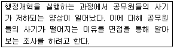
- 우편조사보다 응답률이 낮다.
- 보충적인 정보수집이 가능하다.
- 전화조사보다 비용이 많이 든다.
- 자료수집 상황의 통제가 가능하다.
(정답률: 83%)
21. 인터넷조사에 관한 설명으로 틀린 것은?
- 인터넷 사용가능자에 한해서만 조사된다.
- 인터넷 표본의 모집단을 규정하기 힘들다.
- 본인 확인이 불가능한 경우 중복 조사될 수 있다.
- 표본수의 증감에 따른 조사비용의 증감이 크다.
(정답률: 81%)
22. 설문지 작성시 질문순서에 관한 설명으로 틀린 것은?
- 흥미나 관심을 끌 수 있는 질문부터 배치한다.
- 다른 문항에 영향을 미칠 수 있는 질문은 뒤쪽에 배치한다.
- 포괄적 질문부터 실시하고, 세부적인 질문은 나중에 배치한다.
- 인구통계적 변수나 개인적 질문(성별, 학력 등)은 맨 앞에 배치한다.
(정답률: 59%)
23. 자신의 신분을 밝히지 않은 채 자연스럽게 일어나는 사회적 과정에 참여하는 관찰자의 역할은?
- 완전참여자
- 완전관찰자
- 참여자적 관찰자
- 관찰자적 참여자
(정답률: 69%)
24. 다음 중 연구하려고 하는 문제의 핵심적인 요소들을 분명히 알지 못할 때 질문지 작성의 전 단계에서 실시하는 비지시적 방식의 조사는?
- 사전조사(pretest)
- 파일럿조사(pilot survey)
- 본조사(main survey)
- 사례조사(case study)
(정답률: 54%)
25. 다음중 종단적 연구가 아닌 것은?
- 시계열연구(time series study)
- 동질성집단연구(cohort study)
- 패널연구(panel study)
- 단면연구(cross-sectional study)
(정답률: 63%)
26. 관찰을 통한 자료수집시 지각과정에서 나타나는 오류를 감소하기 위한 방안으로 틀린 것은?
- 객관적인 관찰 도구를 사용한다.
- 보다 큰 단위의 관찰을 한다.
- 가능한 한 관찰단위를 명세화해야 한다.
- 관찰기간을 될 수 있는 한 길게 잡는다.
(정답률: 75%)
27. 연구자가 검정요인(test factor)을 연구에 도입하는 가장 큰 이유는?
- 인과성의 확인
- 측정의 타당도 향상
- 측정의 신뢰도 향상
- 일반화 가능성의 증대
(정답률: 41%)
28. 다음중 설문지의 질문으로 가장 적합한 것은?
- “미친사람에 대한 당신의 반응은 어떻습니까?”
- “당신 아버지의 수입은 얼마입니까?”
- “어묵과 붕어빵을 파는 노점상들 간에는 경쟁이 치열합니까?”
- “당신의 국적은 어디입니까?”
(정답률: 78%)
29. 관찰 대상자가 관찰사실을 아는가 여부를 기준으로 관찰기법을 분류한 것은?
- 자연적/인위적 관찰
- 공개적/비공개적 관찰
- 체계적/비체계적 관찰
- 직접/간접관찰
(정답률: 72%)
30. 우편조사시 취지문이나 질문지 표지에 반드시 포함되지 않아도 되는 사항은?
- 조사기관
- 조사목적
- 표본수
- 비밀유지보장
(정답률: 73%)
2과목: 조사방법론 II
31. 사회조사에 발생하는 측정오차의 원인과 가장 거리가 먼 것은?
- 조사의 목적
- 측정대상의 상태 변화
- 환경적 요인의 변화
- 측정도구와 측정대상자의 상호작용
(정답률: 65%)
32. 다음 척도의 종류는?
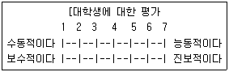
- 서스톤척도
- 리커트척도
- 거트만척도
- 의미분화척도
(정답률: 61%)
33. 일반적인 표본추출과정을 바르게 나열한 것은?
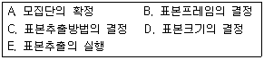
- A → B → C → D → E
- B → A → D → C → E
- D → A → B → C → E
- C → A → B → D → E
(정답률: 70%)
34. 다음 ( )에 알맞은 것은?
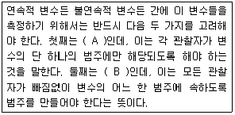
- A : 포괄성, B : 상호배타성
- A : 독립성, B : 상호배타성
- A : 상호배타성, B :포괄성
- A : 상호배타성, B : 독립성
(정답률: 67%)
35. 개념이 사회과학, 기타 조사방법에 있어 기여하는 역할과 가장 거리가 먼 것은?
- 인간의 감각에 의해 감지될 수 있는 현상에 대해서만 이해할 수 있는 방법을 제시해 준다.
- 개념은 언어나 기호로 나타내어 지식의 축적과 확장을 가능하게 해 준다.
- 개념은 연역적 결과를 가져다 준다.
- 조사연구에 있어 주요개념은 연구의 출발점을 가르쳐 준다.
(정답률: 63%)
36. 다음 중 확률표집에 해당하는 것은?
- 편의표집(convinience sampling)
- 판단표집(judgement sampling)
- 층화표집(stratified random sampling)
- 눈덩이표집(snowball sampling)
(정답률: 73%)
37. 다음 중 조작적 정의에 관한 설명으로 틀린 것은?
- 주어진 단어가 이미 정립된 의미를 가진 다른 표현과 동의적일 때에 사용된다.
- 용어의 지시물을 식별하는데 사용되는 관찰 가능한 절차의 구체화이다.
- 정의된 변수는 그것의 관찰과 측정의 단계가 분명히 밝혀져 있을 때 조작적으로 정의될 수 있다.
- 숫자로 측정될 수 있는 항목들을 추출해낸다.
(정답률: 48%)
38. 서울지역의 전화번호부를 이용하여 최초의 101번째 사례를 임으로 결정한 후 계속 201, 301, 401 번째의 순서로 뽑는 표집방법은?
- 층화표집(stratified sampling)
- 집락표집(cluster sampling)
- 계통표집(systematic sampling)
- 편의표집(convenience sampling)
(정답률: 67%)
39. 다음 ( )에 알맞은 것은?
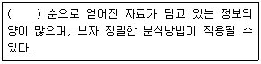
- 서열측정 > 명목측정 > 비율측정 > 등간측정
- 명목측정 > 서열측정 > 등간측정 > 비율측정
- 등간측정 > 비율측정 > 서열측정 > 명목측정
- 비율측정 > 등간측정 > 서열측정 > 명목측정
(정답률: 65%)
40. 특정 지역 전체인구의 1/4은 A지역에, 3/4은 B구역에 분포되어 있고, A, B 두 지역의 인구가 다 같이 60%가 고졸자이고 40%가 대졸자라고 가정하자. 이들 A, B 두 구역의 할당표본표집의 크기를 1000명으로 제한 한다면, A 지역의 고졸자와 대졸자는 각 몇 명씩 조사해야 하는가?
- 고졸 100명, 대졸 150명
- 고졸 150명, 대졸 100명
- 고졸 450명, 대졸 300명
- 고졸 300명, 대졸 450명
(정답률: 73%)
41. 다음 중 신뢰성의 개념과 가장 거리가 먼 것은?
- 안정성
- 일관성
- 동시성
- 예측가능성
(정답률: 48%)
42. 거트만 척도에서 응답자의 응답이 이상적인 패턴에 얼마나 가까운가를 측정하는 것은?
- 스캘로그램
- 단일차원계수
- 최소오차계수
- 재생계수
(정답률: 51%)
43. 다음 ( )안에 알맞은 것은?
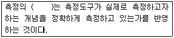
- 타당도
- 신뢰도
- 유의도
- 독립도
(정답률: 76%)
44. 다음 사례와 같이 조사대상자들로부터 정보를 얻어 다른 조사대상자를 구하는 표집방법은?
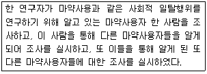
- 눈덩이표집(snowball sampling)
- 판단표집(judgment sampling)
- 할당표집(quota sampling)
- 편의표집(convenience sampling)
(정답률: 71%)
45. 다음과 같은 특징을 가지는 신뢰성 측정방법은?
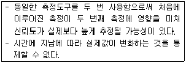
- 재검사법(test-retest method)
- 복수양식법(parallel-forms technique)
- 반분법(split-half method)
- 내적 일관성법(internal consistency analysis)
(정답률: 75%)
46. 개념타당성(construct validity)의 종류가 아닌 것은?
- 이해타당성(nomological validity)
- 집중타당성(convergent validity)
- 판별타당성(discriminant validity)
- 기준관련 타당성(criterion-related validity)
(정답률: 50%)
47. 측정의 신뢰성을 높이는 방법과 가장 거리가 먼 것은?
- 측정항목의 수를 줄인다.
- 측정항목의 모호성을 제거한다.
- 조사자의 면접방식과 태도에 일관성을 확보한다.
- 이전의 조사에서 신뢰성이 있다고 인정된 측정도구를 이용한다.
(정답률: 67%)
48. 한 개인의 태도를 측정하기 위해 사용된 문항들이 단일차원에 속하는지를 확인할 수 있는 척도는?
- 서스톤척도
- 리커트척도
- 거트만 척도
- 의미분화척도
(정답률: 50%)
49. 다단계집락표집에 대한 설명으로 틀린 것은?
- 최초의 집락수가 많으면 그 이후의 집락수는 작아진다.
- 표본의 대표성을 높이기 위해서는 최초의 집락수를 작게 하는 것이 좋다.
- 다단계집락표집을 할 때 층화표집을 병행하는 것은 표본의 대표성을 높이기 위한 한 방법이다.
- 규모비례확률표집(PPS)은 다단계집락표집에 속한다.
(정답률: 41%)
50. 표집틀(sampling frame)과 모집단과의 관계로 가장 이상적인 경우는?
- 표집틀과 모집단이 일치할 때
- 표집틀이 모집단내에 포함될 때
- 모집단이 표집틀내에 포함될 때
- 모집단과 표집틀의 일부분만이 일치할 때
(정답률: 51%)
51. A 항공사에서 자사의 마일리지 사용자 중 최근 1년동안 10만 마일 이상 사용자들을 모집단으로 하면서 자사마일리지 카드 소지자 명단을 표본 프레임으로 사용하여 전체에서 표본추출을 할 때의 표본프레임의 오류는?
- 표본프레임이 모집단애에 포함되는 경우
- 모집단이 표본프레임내에 포함되는 경우
- 모집단과 표본프레임의 일부분만이 일치하는 겨웅
- 모집단과 표본프레임이 전혀 일치하지 않는 경우
(정답률: 52%)
52. 다음중 표집틀(sampling frame)을 평가하는 주요 요소와 가장 거리가 먼 것은?
- 포괄성
- 추출확률
- 효율성
- 안정성
(정답률: 46%)
53. 4년제 대학에 다니는 대학생의 정치의식을 조사하기 위해 학년(grade)과 성(sex)에 따라 할당표집을 할 때 표본추출을 위한 할당범주는 몇 개인가?
- 2개
- 4개
- 8개
- 16개
(정답률: 70%)
54. 표집오차(sampling error)에 대한 설명으로 틀린 것은?
- 표본의 분산이 작을수록 표집오차는 작아진다.
- 표본의 크기가 클수록 표집오차는 작아진다.
- 표집오차란 통계량들이 모수 주위에 분산되어 있는 정도를 말한다.
- 집락표집에서는 표본의 크기가 같을 때 단순무작위 표집에서 보다 표집오차가 작아진다.
(정답률: 49%)
55. 다음중 측정수준이 다른 하나는?
- 기온
- 신장
- 체중
- 소득
(정답률: 58%)
56. 전수조사와 비교할 때 표본조사의 특징에 관한 설명으로 옳은 것은?
- 시간과 노력이 많이 든다.
- 조사기간 동안에 발생하는 변화를 반영하지 못한다.
- 비표본 오차를 줄일 수 있다.
- 항상 정확한 자료를 수집할 수 있다.
(정답률: 53%)
57. 측정오차(error of measurement)에 관한 설명으로 옳은 것은?
- 체계적 오차(systematic error)의 값은 상호상쇄 되는 경향이 있다.
- 신뢰성은 체계적 오차(systematic error)와 관련된 개념이다.
- 타당성은 비체계적 오류(random error)와 관련된 개념이다.
- 비체계적 오차(random error)는 인위적이지 않아 오차의 값이 다양하게 분산되어 있다.
(정답률: 56%)
58. 서스톤척도는 어떤 측정수준에 해당하는가?
- 명목척도
- 등간척도
- 비율척도
- 서열척도
(정답률: 50%)
59. 실제관계가 표면적으로 나타난 관계와는 정반대임을 밝혀주는 검정요인은?
- 외적변수(extraneous variable)
- 외생변수(exogenous variable)
- 억제변수(suppressor variable)
- 왜곡변수(distorter variable)
(정답률: 63%)
60. 다음 사례에서 성적은 어떤 변수에 해당되는가?
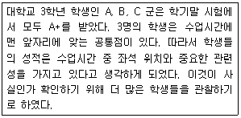
- 독립변수
- 통제변수
- 매개변수
- 종속변수
(정답률: 73%)
3과목: 사회통계
61. 다음 내용에 대한 가설형태로 옳은 것은?
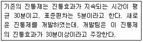
- H0 : μ < 30, H1 : μ = 30
- H0 : μ = 30, H1 : μ > 30
- H0 : μ > 30, H1 : μ = 30
- H0 : μ = 30, H1 : μ ≠ 30
(정답률: 48%)
62. 두 변수의 관찰값이 다음과 같을 때 최소제곱방법으로 추정한 회귀식으로 옳은 것은?
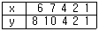
 = 1 - 0.5x
= 1 - 0.5x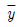
= 1 + 2x = -1 + 1.5x
= -1 + 1.5x = -4 + x
= -4 + x
(정답률: 33%)
63. 다음 자료를 가지고 두 변수간의 상관관계를 해석하고자 할 때, 이에 대한 분석으로 옳은 것은?
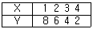
- X와 Y는 완전한 음의 상관관계이다.
- X와 Y는 완전한 양의 상관관계이다.
- X와 Y는 상관관계가 없다.
- X와 Y는 부분적 음의 상관관계이다.
(정답률: 37%)
64. 점추정치(point estimate)에 관한 설명으로 틀린 것은?
- 표본의 평균으로부터 모집단의 평균을 추정하는 것도 점추정치이다.
- 점추정치는 표본의 평균을 정밀하게 조사하여 나온 결과이기 때문에 항상 모집단의 평균치와 거의 동일하다.
- 점추정치의 통계적 속성은 일치성, 충분성, 효율성, 불편성 등 4가지 기준에 따라 분석될 수 있다.
- 점추정치를 구하기 위한 표본 평균이나 표본비율의 분포는 정규분포를 따른다.
(정답률: 49%)
65. 어느 대학교에서 학생들을 대상으로 키, 몸무게, 혈액형, 월평균 용돈 등 4개의 변수에 대한 관측값을 얻었다. 이들 변수 중 관측값들을 대표 하는 척도로 최빈값(mode)을 사용하는 것이 가장 적합한 것은?
- 키
- 몸무게
- 혈액형
- 월평균 용돈
(정답률: 56%)
66. 초등학교 학생과 대학생의 용돈의 평균과 표준편차가 다음과 같을 때 변동계수를 비교한 결과로 옳은 것은?
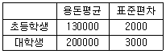
- 초등학생의 용돈이 대학생 용돈보다 상대적으로 더 평균에 밀집되어 있다.
- 대학생 용돈이 초등학생 용돈보다 상대적으로 더 평균에 밀집되어 있다.
- 초등학생 용돈과 대학생 용돈의 변동계수는 같다.
- 평균이 다르므로 비교할 수 없다.
(정답률: 34%)
67. 1개의 주사위와 1개의 동전을 던질 때 A는 동전의 앞면이, B는 주사위의 5가 나오는 사건으로 정의할 때 P( A | B)의 값은?
- 1/6
- 1/2
- 1/12
- 5/6
(정답률: 53%)
68. 사회현안에 대한 찬반 여론조사를 실시한 결과 찬성률이 0.8 이었다면 3명을 임의 추출했을 때 2명이 찬성할 확률은?
- 0.096
- 0.384
- 0.533
- 0.667
(정답률: 38%)
69. 3개 이상의 모집단의 모평균을 비교하는 통계적 방법으로 가장 적합한 것은?
- t-검정
- 회귀분석
- 분산분석
- 상관분석
(정답률: 46%)
70. 어느 회사는 4개의 철강공급업체로부터 철판을 공급받는다. 각 공급업체들이 납품하는 철판의 품질을 평가하기 위해 인장강도(kg/psi)를 각 2회씩 측정하여 다음의 중간결과를 얻었다. 4개의 공급업체들이 납품하는 철강의 품질에 차이가 없다는 가설을 검정하기 위한 F-비는? ( 단,
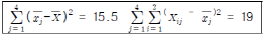
)- 10.333
- 2.175
- 4.750
- 1.0875
(정답률: 15%)
71. X 는 정규분포를 따르는 확률변수이다. P(X<10)=0.5, P(X<9)=0.16, P(X<8)=0.025 일 때, X 의 기댓값은?
- 8
- 8.5
- 9.5
- 10
(정답률: 13%)
72. 다음 중 두 집단의 분산의 동일성 검정에 사용되는 검정통계량의 분포는?
- 정규분포
- 이항분포
- 카이제곱분포
- F -분포
(정답률: 34%)
73. 단순회귀분석에서 회귀직선의 추정식이
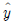
=0.5-2x 와 같이 주어졌을 때의 설명으로 틀린 것은?- 반응변수는 y 이고, 설명변수는 x 이다.
- 설명변수가 한 단위 증가할 때 반응변수는 2단위 감소한다.
- 반응변수와 설명변수의 상관계수는 0.5이다.
- 설명변수가 0 일 때 반응변수의 예측값은 0.5이다.
(정답률: 44%)
74. 다음 ( )에 알맞은 것은?
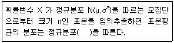
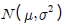
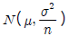
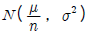
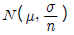
(정답률: 52%)
75. 확률변수 X 가 이항분포 B(25, 1/5)을 따를 때, 확률변수 Y 의 표준편차는? (단, Y = 4X - 3)
- 4
- 8
- 12
- 16
(정답률: 35%)
76. 미국에서는 인종간의 지적 능력의 근본적 차이를 강조하는 “종모양 곡선(Bell Curve)”이라는 책이 논란을 불러일으킨 적이 있다. 만약 흑인과 백인의 지능지수의 차이를 단순 비교할 목적으로 각각 20명씩 표본 추출하여 조사할 때 가장 적합한 검정도구는?
- x2 -검정
- t-검정
- F -검정
- Z -검정
(정답률: 55%)
77. 어떤 시험에서 학생들의 점수는 평균 75점, 표준편차 15점의 정규분포를 한다고 하자. 10%의 학생에게 A하가점을 준다고 했을 때, 다음 중 A학점을 받을 수 있는 최소의 점수는? (단, P(0<Z<1.28) = 0.4)
- 89
- 93
- 95
- 97
(정답률: 33%)
78. 다음 중회귀모형에서 오차분산 σ2의 추정량은?(단,
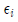
는 잔차)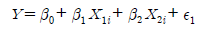
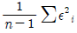
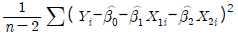
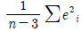
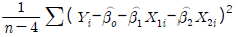
(정답률: 24%)
79.
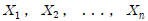
이 정규모집단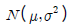
으로부터의 랜덤표본이고, 표본 평균을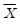
, 표본분산을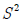
이라고 할 때, 통계량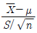
의 분포는?- 자유도가 (n-1)인 t-분포
- 자유도가 n인 t-분포
- 자유도가 (n-1)인 카이제곱분포
- 자유도가 n인 카이제곱분포
(정답률: 26%)
80. 다음은 독립변수가 k개인 경우이 중회귀모형이다.
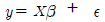
최소 제곱법에 의한 회귀계수 벡터 β 의 추정식 b 는? (단,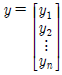
,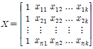
,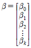
,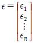
이며, X' 은 X 의 변환 행렬)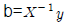
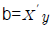
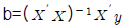
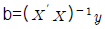
(정답률: 38%)
81. 다음 중 아래의 분산분석표에 관한 설명으로 틀린 것은?
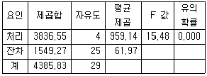
- 분산분석에 사용된 집단의 수는 5개이다.
- 분산분석에 사용된 관찰값의 수는 30개이다.
- 각 처리별 평균값의 차이가 있다.
- 위의 분산분석표에서 F 값과 유의확률은 서로 관련이 없는 통계값이다.
(정답률: 38%)
82. 검정력(power)에 관한 설명으로 옳은 것은?
- 귀무가설이 옳음에도 불구하고 이를 기각시킬 확률이다.
- 옳은 귀무가설을 채택할 확률이다.
- 귀무가설이 거짓일 때 이를 기각시킬 확률이다.
- 거짓인 귀무가설을 채택할 확률이다.
(정답률: 36%)
83. 어느 선거구의 국회의원 선거에서 특정후보에 대한 지지율을 조사하고자 한다. 지지율의 95% 추정오차한계가 5%이내가 되기 위한 표본의 크기는 최소한 얼마이상이어야 하는가? (단, Z ~ N(0, 1) 일 때, P(Z≤1.96) = 0.975)
- 235
- 285
- 335
- 385
(정답률: 30%)
84. 정규분포의 일반적인 성질이 아닌 것은?
- 정규분포는 평균에 대하여 대칭이다.
- 평균과 표준편차가 같은 두 개의 다른 정규분포가 존재할 수 있다.
- 정규분포에서 평균, 중위수, 최빈수는 모두 같다.
- 밀도함수 곡선은 수평에서부터 어느 방향으로든지 수평축에 닿지 않는다.
(정답률: 38%)
85. 평균이 μ 이고, 분산이 16인 정규모집단으로부터 크기가 100인 랜덤표본을 얻고 그 표본평균을  라 하자. 귀무가설 H0 : μ = 8 과 대립가설 H1 : μ = 6.416 의 검정을 위하여 기각역을
라 하자. 귀무가설 H0 : μ = 8 과 대립가설 H1 : μ = 6.416 의 검정을 위하여 기각역을
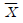
< 7.2 로 둘 때 제1종 오류와 제2종 오류의 확률은?- 제1종 오류의 확률 0.⑤, 제2종 오류의 확률 0.025
- 제1종 오류의 확률 0.023, 제2종 오류의 확률 0.025
- 제1종 오류의 확률 0.023, 제2종 오류의 확률 0.⑤
- 제1종 오류의 확률 0.⑤, 제2종 오류의 확률 0.023
(정답률: 21%)
86. 성별에 따라 모 입학시험 합격자의 지역별 자료이다. 성별과 지역별로 차이가 있는지 검정하기 위해 교차분석을 하고자 한다. 카이제곱(x2)검정을 한다면 자유도는 얼마인가?
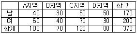
- 1
- 2
- 3
- 4
(정답률: 46%)
87. 다음은 보험가입자 30명에 대한 보험가입액을 조사한 자료이다. 보험가입액의 모평균이 1억원이라고 볼 수 있는가를 검정하고자 한다. 이에 대한 t-검정통계량이 1.201 이고, 유의확률이 0.239 이었다. 유의수준 5% 에서 검정한 결과로 옳은 것은?(단위 : 천만원)
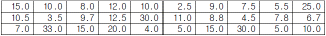
- 유의확률 > 유의수준이므로 모평균이 1억원이라는 가설을 기각하지 못한다.
- 유의확률 > 유의수준이므로 모평균이 1억원이라는 가설을 기각한다.
- 검정통계량 1.201 > 유의수준 이므로 모평균이 1억원이라는 가설을 기각하지 못한다.
- 검정통계량 1. 201 > 유의수준이므로 모평균이 1억원이라는 가설을 기각한다.
(정답률: 32%)
88. 분산분석을 위한 모형에서 오차항에 대한 가정에 해당되지 않는 것은?
- 정규성
- 독립성
- 일치성
- 등분산성
(정답률: 36%)
89. 분산과 표준편차에 관한 설명으로 틀린 것은?
- 분산이 크다는 것은 각 측정치가 평균으로부터 멀리 떨어져 있다는 것을 의미한다.
- 어떤 집단으로부터 수집한 각 수치의 평균편차의 합은 0 이다.
- 분산은 관찰값에서 관찰값들의 평균값을 뺀 값의 제곱의 합계를 관찰 개수로 나눈 값이다.
- 표준편차는 분산의 값을 제곱한 것과 같다.
(정답률: 40%)
90. 자료로부터 얻은 5개의 관찰값이 다음과 같을 때, 대푯값으로 가장 적합한 것은?
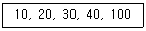
- 최빈수
- 중위수
- 산술평균
- 조화평균
(정답률: 35%)
91. 다음중 오른쪽 꼬리가 긴 분포인 경우는?
- 평균 = 50, 중위수 = 50, 최빈수 = 50
- 평균 = 50, 중위수 = 45, 최빈수 = 40
- 평균 = 40, 중위수 = 45, 최빈수 = 50
- 평균 = 40, 중위수 = 50, 최빈수 = 55
(정답률: 50%)
92. x 의 확률 함수 f(x) 가 다음과 같을 때 (x-1)의 기댓값은?
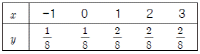
- 0
- 3/8
- 5/8
- 11/8
(정답률: 47%)
93. 비대칭도(skewness)에 관한 설명으로 틀린 것은?
- 비대칭도값이 1 이면 좌우대칭형 분포를 나타낸다.
- 비대칭도의 부호는 관측값 분포의 꼬리방향을 나타낸다.
- 비대칭도는 대칭성 혹은 비대칭성을 측정하는 통계수치이다.
- 비대칭도값이 음수이면 왼쪽으로 꼬리를 길게 늘어뜨린 모양을 나타낸다.
(정답률: 32%)
94. 다음 단순회귀모형에 관한 설명으로 옳은 것은? (단,
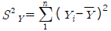
,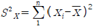
,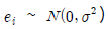
)- X 와 Y 의 표본상관계수를 r 이라 하면 β 의 최소제곱추정량은 이다.
- 모형에서 Xi와 Yi 를 바꾸어도 β 의 추정량은 같다.
- X 가 Y 의 변동을 설명하는 정도는 결정계수로 계산되며 Y 의 변동이 작아질수록 높아진다.
- 오차항 e1, ...., en의 분산이 동일하지 않아도 무방하다.
(정답률: 29%)
95. 해변수가 M개의 범주를 갖고 열변수가 N개의 범주를 갖는 분할표에서 행변수와 열변수가 서로 독립인지를 검정하고자 한다. 셀의 관측 도수를 , 귀무가설 하에서의 기대도수의 추정치를 조 라 할 때, 이 검정을 위한 검정통계량은?
(정답률: 40%)
96. 한 철강회사는 봉강을 생산하는데 5개의 봉강을 무작위로 추출하여 인장강도를 측정했다. 표본평균은 제곱인치(psi)당 22kg이었고, 표본표준편차는 8kg이었다. 이 회사는 봉강의 평균 인장강도를 신뢰도 90%에서 양측신뢰구간으로 추정한 것은?(단, 모집단은 정규분포를 따르고,t4,0.1 = 1.5332, . t5,0.1 = 1.4759, t4,0.⑤ = 2.1318, t5,0.⑤ = 2.0150, P(Z>1.28)=0.1, P(Z>1.96)=0.025, P(Z>1.645)=0.5)
- 22±7.63
- 22±7.21
- 22±5.89
- 22±5.22
(정답률: 26%)
97. 단순회귀분석의 기본가정에 대한 설명으로 틀린 것은?
- 오차항은 정규분포를 따른다.
- 독립변수와 오차는 상관계수가 0 이다.
- 오차항의 기댓값은 0 이다.
- 오차항들의 분산이 항상 같지는 않다.
(정답률: 31%)
98. X1, X2, ... Xn은 서로 독립이고, 성공률이 p 인 동일한 베르누이분포를 따른다. 이 때, X1 + X2 + ... + Xn 은 어떤 분포를 따르는가?(단, B는 이항분포를, Poisson은 포아송분포를 나타냄)
- B(n/2, p)
- B(n, p)
- Poisson(p)
- Poisson(np)
(정답률: 48%)
99. 다음중 상관계수에 관한 설명으로 옳은 것은?
- 두 변수간에 차이가 있는가를 나타내는 측도이다.
- 두 변수간의 분산의 차이를 나타내는 측도이다.
- 두 변수간의 곡선관계를 나타내는 측도이다.
- 두 변수간의 선형관계일 때에 사용하는 측도이다.
(정답률: 46%)
100. 어느 고등학교 1학년 학생의 신장은 평균이 168cm이고, 표준편차가 6cm인 정규분포를 따른다고 한다. 이 고등학교 1학년 학생 100명을 임의 추출할 때 표본평균이 167cm이상 169cm 이하일 확률은? (단, P(Z≤1.67) = 0.9525 )
- 0.9⑤0
- 0.0475
- 0.8⑤0
- 0.7⑤0
(정답률: 41%)